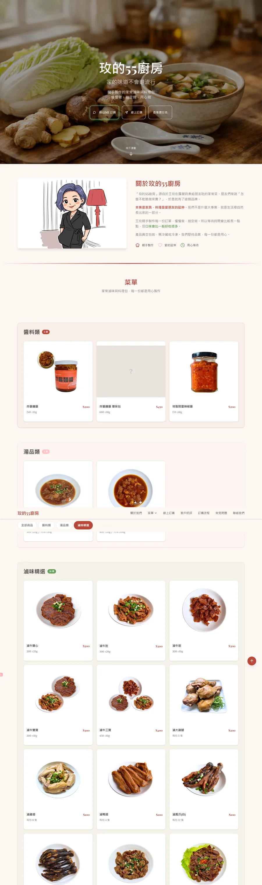
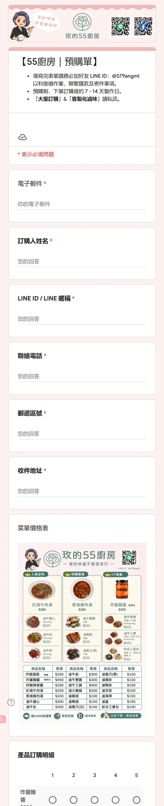
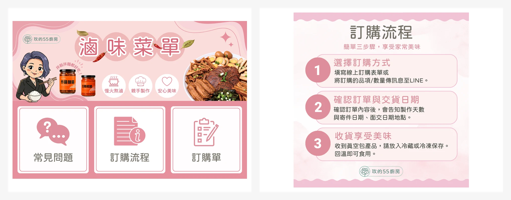

55廚房
從零散素材到可閱讀、可詢問、可下單的品牌接觸流程
品牌資訊整理菜單設計一頁式網站LINE OA

01
專案簡介
55廚房提供家常料理、冷凍調理包與自製醬料。原有資訊分散在菜單、商品圖、Facebook、LINE 與 Google 訂購表單中，顧客需要在多個入口之間來回尋找。
本案以「先看懂商品，再理解購買方式，最後完成詢問或下單」為主軸，重新整理品牌內容、商品分類、菜單層級與導購入口。
02
專案挑戰
既有菜單累積大量品項與說明，但缺少穩定的分類方式；同一商品又有瓶裝、真空環保包等不同包裝，容易造成顧客辨識上的混淆。
網站、社群與 LINE 各自承載不同資訊，卻缺少一致的導覽邏輯。設計工作因此不只是視覺整理，而是先完成資訊盤點、命名統一與流程重組。
03
完成項目
既有 JPG Logo 修整、清晰化與向量化完成
完整菜單與商品資訊分層完成
一頁式品牌網站與手機版完成
Google 訂購表單視覺與入口整合完成
Facebook 商品圖卡與食用情境內容完成
LINE OA 圖文選單、FAQ 與導購流程完成
04
我的角色
負責品牌資訊盤點、內容分類、菜單與版面設計、網站建置，以及社群與 LINE 官方帳號之間的資訊串接。
客戶提供產品、營運資訊與既有素材；我將內容轉換成一致的商品命名、閱讀層級與導購路徑，再延伸到各個顧客接觸點。
05
資訊架構
01集中品牌資訊
以一頁式網站說明品牌、主力商品、價格與購買方式。
02統一商品辨識
整理菜單分類與商品命名，清楚區分瓶裝、真空環保包及其他規格。
03縮短下單路徑
由網站與 LINE 導向訂購表單，讓顧客依同一套資訊完成選購。
06
成果展示
以實際交付素材呈現菜單整理、商品包裝辨識、品牌網站、訂購表單、LINE 導購與社群內容的完整串接。

重新整理品項分類、價格與購買資訊，建立較清楚的閱讀層級。

補齊不同包裝版本的展示，降低顧客對商品形式的混淆。

集中品牌介紹、商品、價目表與訂購入口。

讓手機使用者確認品項、數量、付款方式並送出訂單。

將菜單、FAQ、訂購與聯絡入口集中於主要操作區。

以生活化內容說明商品用途，並整理真實使用經驗作為品牌信任素材。
07
案例成果
本案把散落在不同平台的內容，轉換成一致的商品語言與導購順序。顧客可從品牌網站或 LINE 理解商品、確認包裝與購買方式，再進入訂購表單。
商品資訊整理菜單與網站顧客導購LINE OA社群接觸點